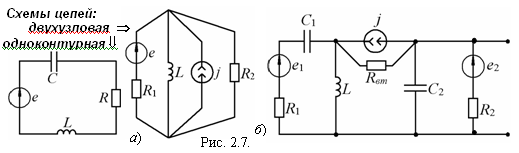

2.2.1. Простые и сложные цепи
Простая электрическая цепь обычно содержит один источник энергии и в ней (в большинстве случаев) можно указать истинные, а не условные положительные, направления токов во всех ветвях (рис. 2.7, а).  Сложная цепь имеет планарную или объёмную конфигурацию, содержит несколько активных элементов, нередко с различными законами изменения ЭДС источников напряжения и/или токов источников тока (см. рис. 2.7, б).
|